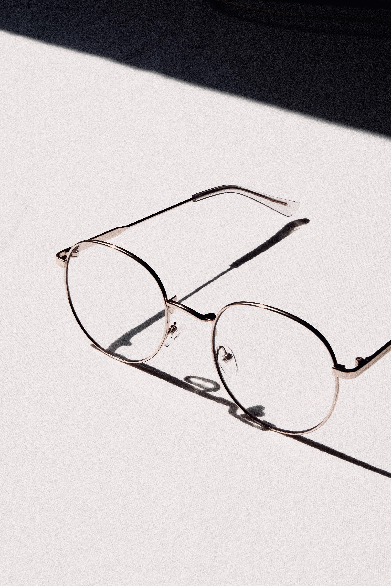

Очки - это не только модный аксессуар, но и необходимый инструмент для коррекции зрения. Они могут помочь исправить многие проблемы со зрением, такие как близорукость, дальнозоркость, астигматизм и другие. Очки состоят из двух основных элементов - оправы и линз. Оправа может быть изготовлена из различных материалов, таких как металл, пластик или комбинация обоих. Линзы могут быть сделаны из стекла или пластика, и они могут быть покрыты различными покрытиями, такими как антибликовое покрытие или покрытие против царапин.

| Тип очков | Материал оправы | Материал линз |
| Для коррекции зрения | Металл, пластик, комбинированный | Стекло, пластик |
| Солнцезащитные | Металл, пластик, комбинированный | Поляризованные, тонированные |
| Компьютерные | Металл, пластик, комбинированный | Антибликовые, защитные |
- Очки для коррекции зрения
- Солнцезащитные очки
- Компьютерные очки
- Очки для чтения
- Спортивные очки